Виручка 2021 -> 2025
1 265 723 грн -> 1 078 051 грн
-14.8%
Матеріал підготовлено на базі деталізованих таблиць з БД 1С.
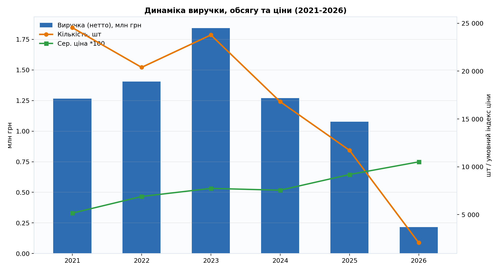
Що показує графік: як змінювались виручка, кількість проданих одиниць і середня ціна по роках.
Короткий висновок: основна проблема в падінні кількості продажів; зростання ціни не перекрило втрату обсягу.
| Рік | Кількість чеків/документів | Кількість клієнтів | Кількість товарних позицій | Продано одиниць | Виручка (нетто) | Середній чек | Середня ціна за одиницю |
|---|---|---|---|---|---|---|---|
| 2021 | 3 926 | 965 | 5 516 | 24 537 | 1 265 723 грн | 322.40 грн | 51.58 грн |
| 2022 | 3 168 | 557 | 4 766 | 20 390 | 1 406 316 грн | 443.91 грн | 68.97 грн |
| 2023 | 3 831 | 671 | 5 358 | 23 778 | 1 841 498 грн | 480.68 грн | 77.45 грн |
| 2024 | 3 057 | 388 | 4 725 | 16 803 | 1 269 359 грн | 415.23 грн | 75.54 грн |
| 2025 | 2 397 | 258 | 3 706 | 11 728 | 1 078 051 грн | 449.75 грн | 91.92 грн |
| 2 026 | 440 | 46 | 893 | 2 063 | 216 966 грн | 493.10 грн | 105.17 грн |
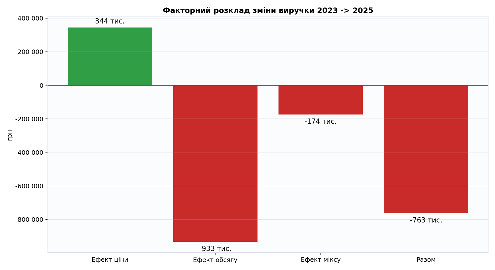
Що показує графік: з яких частин складається зміна виручки: ефект ціни, ефект кількості та структурний ефект.
Короткий висновок: найбільший негативний внесок дає саме падіння кількості продажів.
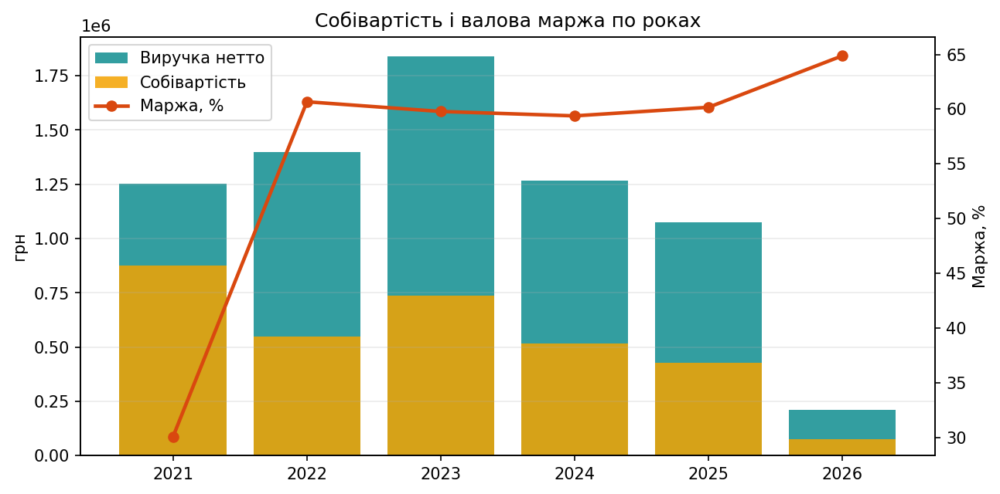
Що показує графік: по кожному року порівняння виручки нетто і собівартості, а також валової маржі.
Короткий висновок: маржа у 2022-2026 значно вища, ніж у 2021; це означає, що головний резерв росту прибутку зараз у поверненні обсягу продажів, а не у підвищенні націнки.
| Рік | Виручка нетто | Собівартість | Валовий прибуток (розрах.) | Валова маржа, % | К-сть рядків продажу |
|---|---|---|---|---|---|
| 2021 | 1 253 329 грн | 876 495 грн | 376 834 грн | 30.1% | 13 241 |
| 2022 | 1 399 694 грн | 550 428 грн | 849 266 грн | 60.7% | 10 986 |
| 2023 | 1 837 949 грн | 739 096 грн | 1 098 852 грн | 59.8% | 13 760 |
| 2024 | 1 268 747 грн | 515 285 грн | 753 461 грн | 59.4% | 10 826 |
| 2025 | 1 074 243 грн | 427 860 грн | 646 383 грн | 60.2% | 7 567 |
| 2 026 | 211 791 грн | 74 383 грн | 137 408 грн | 64.9% | 1 235 |
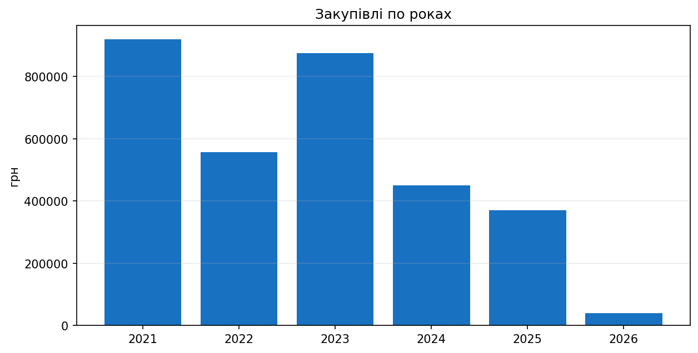
Що показує графік: річну суму закупівель у гривні.
Короткий висновок: після 2023 обсяг закупівель зменшувався, що підтверджує зниження обороту і потребує акуратного планування запасів.
| Рік | Сума закупівель | Закуплено одиниць | К-сть рядків |
|---|---|---|---|
| 2021 | 919 115 грн | 18 730.00 | 2 191 |
| 2022 | 556 651 грн | 14 341.00 | 1 184 |
| 2023 | 875 641 грн | 15 831.00 | 2 030 |
| 2024 | 450 834 грн | 6 989.00 | 1 223 |
| 2025 | 369 695 грн | 9 167.00 | 1 092 |
| 2 026 | 39 738 грн | 1 247.00 | 177 |
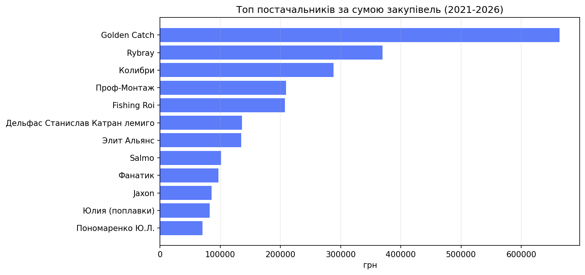
Що показує графік: кого з постачальників ви фінансуєте найбільше по сумі закупівель.
Короткий висновок: є концентрація закупівель на обмеженій групі постачальників; важливо тримати альтернативи по ключових позиціях.
| Постачальник | Сума закупівель | К-сть рядків |
|---|---|---|
| Golden Catch | 663 868 грн | 1 303 |
| Rybray | 369 742 грн | 645 |
| Колибри | 288 395 грн | 1 |
| Проф-Монтаж | 209 044 грн | 921 |
| Fishing Roi | 207 435 грн | 375 |
| Дельфас Станислав Катран лемиго | 136 238 грн | 329 |
| Элит Альянс | 134 680 грн | 433 |
| Salmo | 101 058 грн | 366 |
| Фанатик | 96 812 грн | 617 |
| Jaxon | 85 381 грн | 320 |
| Юлия (поплавки) | 82 437 грн | 152 |
| Пономаренко Ю.Л. | 70 417 грн | 29 |
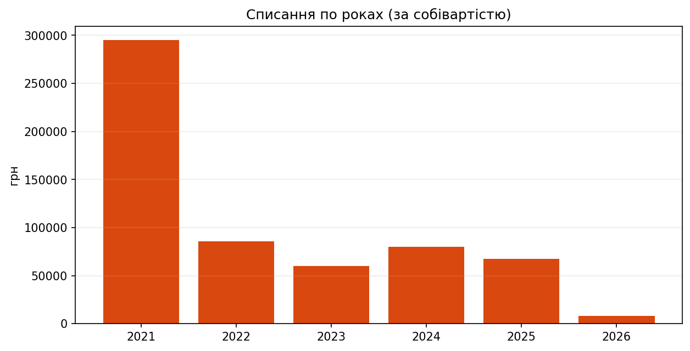
Що показує графік: річний рівень списань за собівартістю.
Короткий висновок: списання залишаються суттєвими і прямо зменшують фінрезультат; потрібен регулярний контроль причин списання по SKU.
| Рік | Сума списань (зі знаком) | Кількість списаних одиниць (зі знаком) | К-сть рядків списання |
|---|---|---|---|
| 2021 | -294 897 грн | -14 394.60 | 2 654 |
| 2022 | -85 903 грн | -3 655.00 | 1 199 |
| 2023 | -60 043 грн | -3 312.00 | 927 |
| 2024 | -79 957 грн | -1 699.00 | 708 |
| 2025 | -67 740 грн | -11 642.00 | 924 |
| 2 026 | -8 467 грн | -2 805.00 | 118 |
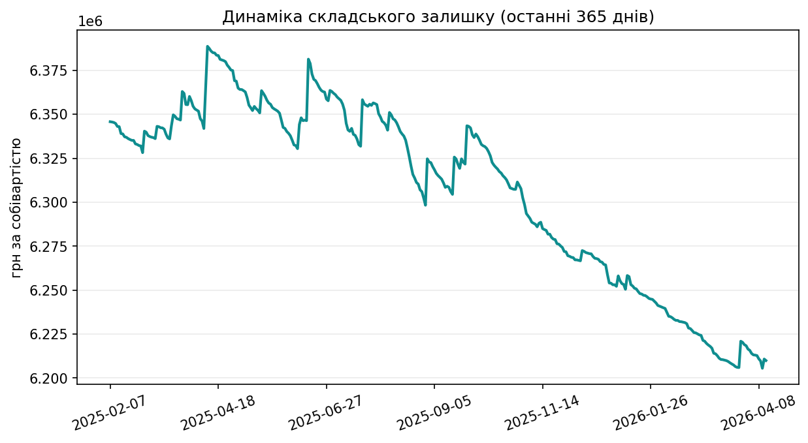
Що показує графік: як змінювалась грошова вартість складського залишку за собівартістю в останній рік.
Короткий висновок: графік дає розуміння, чи не заморожуються кошти в запасах і чи немає різких провалів по поповненню.
| Дата | Залишок, одиниць (кінець дня) | Залишок, грн за собівартістю | Зміна за день, одиниць | Зміна за день, грн |
|---|---|---|---|---|
| 2024-11-30 | 316 883.00 | 6 397 530 грн | -190.00 | -6 540 грн |
| 2024-12-30 | 316 169.00 | 6 371 574 грн | -73.00 | -2 508 грн |
| 2025-01-31 | 317 350.00 | 6 348 956 грн | -106.00 | -5 574 грн |
| 2025-02-28 | 316 611.00 | 6 328 217 грн | -92.00 | -3 794 грн |
| 2025-03-31 | 317 086.00 | 6 360 194 грн | 18.00 | 4 681 грн |
| 2025-04-30 | 317 421.00 | 6 368 895 грн | -13.00 | -271 грн |
| 2025-05-31 | 316 460.00 | 6 342 028 грн | -13.00 | -530 грн |
| 2025-06-30 | 315 937.00 | 6 363 628 грн | 168.00 | 5 873 грн |
| 2025-07-31 | 315 513.00 | 6 350 366 грн | -62.00 | -5 190 грн |
| 2025-08-30 | 313 961.00 | 6 298 313 грн | -85.00 | -4 087 грн |
| 2025-09-30 | 314 402.80 | 6 338 407 грн | -91.20 | -3 869 грн |
| 2025-10-31 | 310 358.80 | 6 307 706 грн | -40.00 | -1 946 грн |
| 2025-11-29 | 305 324.80 | 6 271 804 грн | -15.00 | -206 грн |
| 2025-12-31 | 303 049.80 | 6 253 061 грн | -5.00 | -874 грн |
| 2026-01-31 | 302 823.80 | 6 240 875 грн | -22.00 | -390 грн |
| 2026-02-28 | 302 204.80 | 6 224 256 грн | -15.00 | -294 грн |
| 2026-03-31 | 299 832.80 | 6 218 381 грн | -18.00 | -614 грн |
| 2026-04-13 | 299 778.80 | 6 209 948 грн | -12.00 | -851 грн |
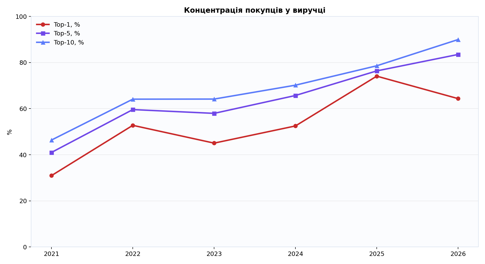
Що показує графік: частку найбільших каналів/клієнтів у загальній виручці.
Короткий висновок: частка позиції "Основной покупатель" фактично відображає офлайн-магазин, а не одного покупця; це означає сильну залежність від офлайн-каналу.
| Рік | Частка найбільшого каналу/клієнта | Частка топ-5 каналів/клієнтів | Частка топ-10 каналів/клієнтів | Частка топ-10 товарів у виручці |
|---|---|---|---|---|
| 2021 | 30.96% | 41.00% | 46.37% | 7.10% |
| 2022 | 52.76% | 59.60% | 64.11% | 8.69% |
| 2023 | 45.05% | 57.95% | 64.15% | 5.30% |
| 2024 | 52.49% | 65.70% | 70.18% | 6.09% |
| 2025 | 74.09% | 76.37% | 78.59% | 6.60% |
| 2 026 | 64.35% | 83.50% | 89.96% | 18.07% |
| Клієнт / канал продажу | Виручка | Продано одиниць | Кількість чеків/документів | Кількість товарних позицій | Середній чек |
|---|---|---|---|---|---|
| Офлайн-продажі в магазині (сукупно, не один клієнт) | 3 567 998 грн | 57 972 | 11 011 | 8 267 | 324.04 грн |
| Клименко А В | 230 838 грн | 2 452 | 230 | 1 114 | 1 003.64 грн |
| Рацул О В | 123 100 грн | 1 563 | 122 | 701 | 1 009.01 грн |
| ДудникНиколай Владимирович | 120 455 грн | 1 577 | 136 | 704 | 885.70 грн |
| Ткаченко А В | 98 182 грн | 1 048 | 91 | 539 | 1 078.93 грн |
| Мумыга М В | 78 909 грн | 1 207 | 111 | 528 | 710.89 грн |
| Кубрак Александр | 52 768 грн | 238 | 10 | 97 | 5 276.80 грн |
| Кириченко А А | 42 072 грн | 530 | 52 | 250 | 809.08 грн |
| Сивиренчук П,С, | 42 037 грн | 366 | 38 | 207 | 1 106.22 грн |
| Живицкий Н В | 40 498 грн | 654 | 40 | 324 | 1 012.46 грн |
| Довченко П,И, | 39 831 грн | 462 | 51 | 122 | 781.01 грн |
| Арапов О В | 29 150 грн | 163 | 94 | 142 | 310.10 грн |
| Артем Ахметьянов | 28 149 грн | 167 | 5 | 75 | 5 629.76 грн |
| Димьянинко С Ф | 28 132 грн | 317 | 15 | 87 | 1 875.46 грн |
| Зеленый А В | 27 057 грн | 268 | 28 | 158 | 966.30 грн |
| Загоруйко Олег Георгиевич | 24 228 грн | 58 | 9 | 50 | 2 692.02 грн |
| Ігор Петрунін | 23 202 грн | 60 | 17 | 38 | 1 364.81 грн |
| Окопник А И | 20 320 грн | 211 | 32 | 120 | 635.01 грн |
| Другаля В В | 20 074 грн | 133 | 16 | 91 | 1 254.64 грн |
| Могилей А В | 18 714 грн | 320 | 38 | 165 | 492.46 грн |
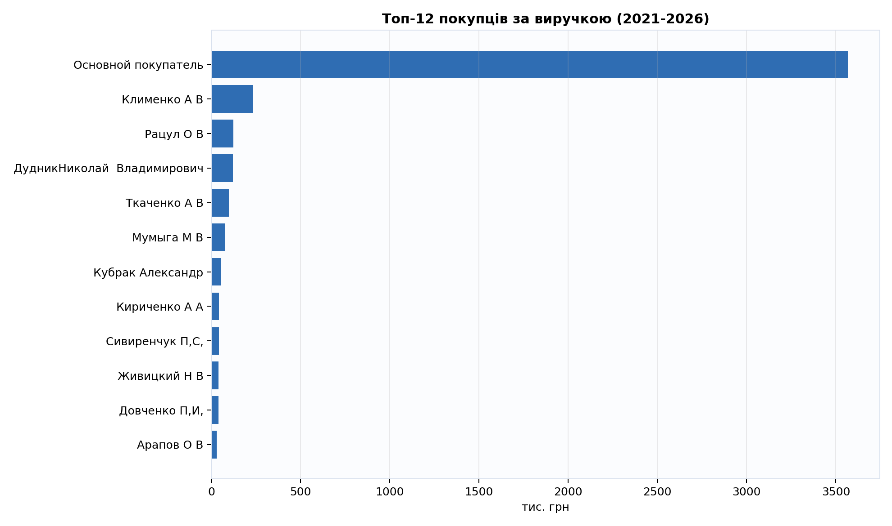
Що показує графік: ключових клієнтів/канали за внеском у виручку.
Короткий висновок: продажі дуже нерівномірні; потрібно вирівнювати структуру клієнтської бази, щоб зменшити ризик просідання.
| Клієнт / канал продажу | Виручка 2023 | Виручка 2025 | Зміна (2025 - 2023) |
|---|---|---|---|
| Клименко А В | 93 178 грн | 139 грн | -93 039 грн |
| Ткаченко А В | 50 486 грн | 0 грн | -50 486 грн |
| Кубрак Александр | 47 289 грн | 0 грн | -47 289 грн |
| Рацул О В | 46 700 грн | 0 грн | -46 700 грн |
| ДудникНиколай Владимирович | 42 375 грн | 0 грн | -42 375 грн |
| Офлайн-продажі в магазині (сукупно, не один клієнт) | 829 505 грн | 798 778 грн | -30 728 грн |
| Мумыга М В | 22 697 грн | 0 грн | -22 697 грн |
| Загоруйко Олег Георгиевич | 16 833 грн | 0 грн | -16 833 грн |
| Вакуленко Ю,А, | 15 515 грн | 0 грн | -15 515 грн |
| Зеленый А В | 13 986 грн | 0 грн | -13 986 грн |
| Димьянинко С Ф | 12 890 грн | 263 грн | -12 627 грн |
| Курбатов Владимир | 11 860 грн | 0 грн | -11 860 грн |
| Кириченко А А | 16 794 грн | 6 134 грн | -10 660 грн |
| Другаля В В | 12 815 грн | 2 639 грн | -10 176 грн |
| Роман Турецький | 9 773 грн | 0 грн | -9 773 грн |
| Клієнт / канал продажу | Виручка 2023 | Виручка 2025 | Зміна (2025 - 2023) |
|---|---|---|---|
| Артем Ахметьянов | 0 грн | 6 434 грн | 6 434 грн |
| БЕРЛОВСЬКИЙ ВАЛЕРІЙ | 0 грн | 6 262 грн | 6 262 грн |
| Волосян А,И, | 0 грн | 5 711 грн | 5 711 грн |
| Тороп С И | 0 грн | 4 539 грн | 4 539 грн |
| Бокуляров Денис | 0 грн | 4 202 грн | 4 202 грн |
| Чечет Ольга | 0 грн | 4 097 грн | 4 097 грн |
| Тимошевский Д В | 0 грн | 4 015 грн | 4 015 грн |
| сергей сосновский | 0 грн | 3 908 грн | 3 908 грн |
| Розгачев Я А | 1 110 грн | 5 000 грн | 3 890 грн |
| Пономаренко Михаил | 0 грн | 3 572 грн | 3 572 грн |
| Василюк Ярослав | 0 грн | 3 485 грн | 3 485 грн |
| Станислав Семіделихин | 0 грн | 3 480 грн | 3 480 грн |
| Лобода Олександр | 0 грн | 3 254 грн | 3 254 грн |
| Кубрик Р С | 1 958 грн | 5 135 грн | 3 177 грн |
| Демчук Андрій Петрович | 0 грн | 2 895 грн | 2 895 грн |
| Товар | Виручка | Продано одиниць | Кількість чеків/документів | Кількість клієнтів | Середня ціна за одиницю |
|---|---|---|---|---|---|
| Яйца 2016 | 70 635 грн | 1 850 | 383 | 54 | 38.18 грн |
| Кресло CZ Recliner Comfort Armchair 56x46x42 98 с подлокотниками и рег. ножками | 38 530 грн | 12 | 11 | 2 | 3 210.86 грн |
| Ледобур Тонар (Барнаул) ЛР-130Д | 24 840 грн | 12 | 12 | 6 | 2 070.00 грн |
| Термобелье NORFIN THERMO LINE (чёрн.) 3008103-L | 23 346 грн | 31 | 6 | 3 | 753.08 грн |
| Шнур GC Inquisitor X4 LG 150м PE1.2 | 18 987 грн | 56 | 56 | 22 | 339.06 грн |
| Мормышка ручн.работа крючок Origin | 18 936 грн | 729 | 179 | 31 | 25.98 грн |
| Спиннинг Kalipso Navigator Pro 3,00м 80-120гр | 18 378 грн | 25 | 19 | 9 | 735.12 грн |
| Спиннинг Golden Catch Tele carp 3.5lbs 3.60м | 16 314 грн | 12 | 9 | 5 | 1 359.51 грн |
| Термобелье NORFIN COSY LINE (чёрное) 3007103-L | 16 088 грн | 14 | 3 | 1 | 1 149.13 грн |
| Спиннинг GC Traise TRS-762LS 2.29м 2-15гр | 15 609 грн | 11 | 11 | 8 | 1 418.97 грн |
| Термобелье NORFIN COSY LINE (чёрное) 3007102-M | 15 167 грн | 13 | 1 | 1 | 1 166.72 грн |
| Катушка Kalipso Monza 4000FE | 15 078 грн | 18 | 15 | 6 | 837.68 грн |
| Ящик Aquatech Plastic 2870 | 14 979 грн | 11 | 11 | 8 | 1 361.76 грн |
| Спиннинг GC Inquisitor INS-762ML 2.29м 4-18г | 14 586 грн | 5 | 5 | 2 | 2 917.29 грн |
| Котушка Fishing ROI Dynamic FR 6+1 6000 бейтр. пласт. шпуля | 14 313 грн | 10 | 8 | 4 | 1 431.30 грн |
| Катушка Salmo ELITE FREERUN 7+1 7650BR (8450BR) | 14 112 грн | 12 | 6 | 1 | 1 176.00 грн |
| Спиннинг Kalipso Titan Carp 3.60м 4.0lb | 13 878 грн | 13 | 9 | 5 | 1 067.52 грн |
| Котушка "Fishing ROI" BORA plus 4+1 2000 Red | 13 318 грн | 16 | 15 | 11 | 832.40 грн |
| Котушка "Fishing ROI" BORA plus 4+1 3000 Red | 13 100 грн | 15 | 13 | 4 | 873.34 грн |
| Ледобур iDabur твин 130 мм | 12 861 грн | 9 | 9 | 6 | 1 429.04 грн |
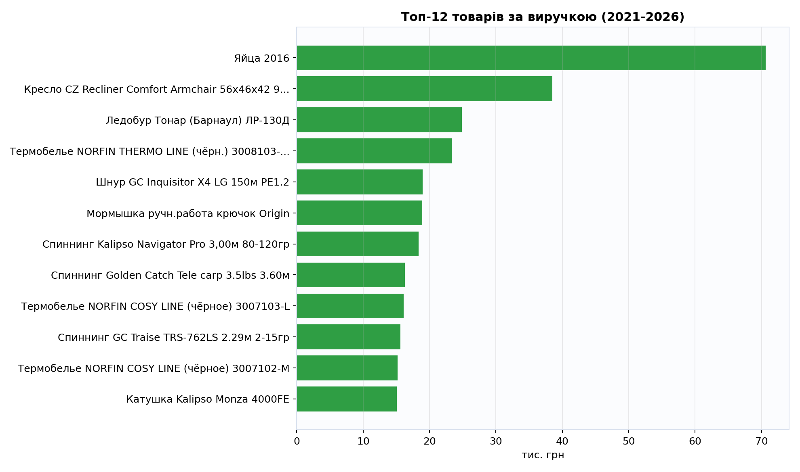
Що показує графік: які товарні позиції дають найбільшу частку виручки.
Короткий висновок: частина виручки тримається на обмеженому наборі позицій, тому важливо контролювати їх наявність і ціну.
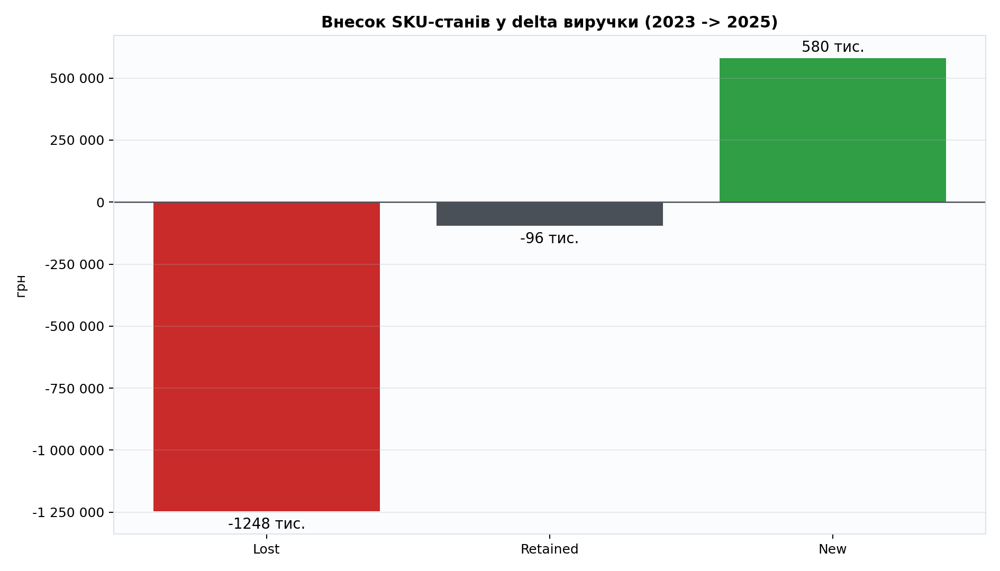
Що показує графік: баланс між новими, втраченими та збереженими товарними позиціями.
Короткий висновок: втрачено багато позицій з виручкою; нові позиції компенсують лише частину падіння.
| Статус товарних позицій | Кількість позицій | Виручка 2023 | Виручка 2025 | Зміна виручки (2025 - 2023) | Кількість 2023 | Кількість 2025 |
|---|---|---|---|---|---|---|
| Вибули з продажу | 3 626 | 1 247 698 грн | 0 грн | -1 247 698 грн | 11 491 | 0 |
| Нові позиції | 1 968 | 0 грн | 580 333 грн | 580 333 грн | 0 | 4 350 |
| Залишились в асортименті | 1 730 | 593 800 грн | 497 718 грн | -96 082 грн | 12 287 | 7 378 |
| Товар | Статус | Виручка 2023 | Виручка 2025 | Зміна виручки | Кількість 2023 | Кількість 2025 | Зміна кількості |
|---|---|---|---|---|---|---|---|
| Лодка Барк B-260NPD | Вибули з продажу | 10 200 грн | 0 грн | -10 200 грн | 1 | 0 | -1 |
| Зимний костюм Norfin Extreme 3 (-32) размер XL | Вибули з продажу | 10 122 грн | 0 грн | -10 122 грн | 1 | 0 | -1 |
| Костюм зимовий мембран. Norfin ARCTIC -25 ° / 4000мм / XL | Вибули з продажу | 10 122 грн | 0 грн | -10 122 грн | 1 | 0 | -1 |
| Спиннинг St.Croix LEGEND ELITE 70 0,9-5,25 гр. LES70ULM2 | Вибули з продажу | 9 773 грн | 0 грн | -9 773 грн | 1 | 0 | -1 |
| Костюм зимний NORFIN Atlantis 438003-XL | Вибули з продажу | 8 811 грн | 0 грн | -8 811 грн | 1 | 0 | -1 |
| Котушка Fishing ROI Dynamic FR 6+1 6000 бейтр. пласт. шпуля | Вибули з продажу | 8 533 грн | 0 грн | -8 533 грн | 6 | 0 | -6 |
| Подставка Fishing Roi Fast Carp | Вибули з продажу | 8 198 грн | 0 грн | -8 198 грн | 2 | 0 | -2 |
| Зимний костюм Norfin Extreme 2 Camo (-32) размер XXL | Вибули з продажу | 8 000 грн | 0 грн | -8 000 грн | 1 | 0 | -1 |
| Шнур GC Inquisitor X4 LG 150м PE1.0 | Вибули з продажу | 7 265 грн | 0 грн | -7 265 грн | 22 | 0 | -22 |
| Заброды (вейдерсы) PROS STANDARD SB01 45 | Вибули з продажу | 6 300 грн | 0 грн | -6 300 грн | 3 | 0 | -3 |
| Котушка "Fishing ROI" BORA plus 4+1 3000 Red | Залишились в асортименті | 7 972 грн | 1 792 грн | -6 180 грн | 9 | 2 | -7 |
| Воблер Kosadaka KD7481 INTRA XS 125F (4-HT), Floating, 125mm, 18,1g | Вибули з продажу | 5 960 грн | 0 грн | -5 960 грн | 21 | 0 | -21 |
| Спиннинг GC Mirrox MRS-802ML 2,44м 5-21гр | Вибули з продажу | 5 825 грн | 0 грн | -5 825 грн | 4 | 0 | -4 |
| Котушка Fishing ROI Dynamic FR 6+1 7000 бейтр. пласт. шпуля | Вибули з продажу | 5 676 грн | 0 грн | -5 676 грн | 4 | 0 | -4 |
| Спиннинг Golden Catch Tele carp 3.5lbs 3.60м | Залишились в асортименті | 7 006 грн | 1 401 грн | -5 605 грн | 5 | 1 | -4 |
| Спиннинг St.Croix AVID Casting Rod 198 см 5,25-14гр. AVC66MLF | Вибули з продажу | 5 604 грн | 0 грн | -5 604 грн | 1 | 0 | -1 |
| Костюм зимний NORFIN THERMAL GUARD (-20°) 431005-XXL | Вибули з продажу | 5 288 грн | 0 грн | -5 288 грн | 1 | 0 | -1 |
| Фидер Favorite Nitrotech 3.90m 120g | Вибули з продажу | 5 264 грн | 0 грн | -5 264 грн | 2 | 0 | -2 |
| Котушка "Fishing ROI" BORA plus 4+1 2000 Red | Вибули з продажу | 5 106 грн | 0 грн | -5 106 грн | 6 | 0 | -6 |
| Кресло CZ Marshal VIP Chair, 52x59x43/110 | Вибули з продажу | 4 728 грн | 0 грн | -4 728 грн | 1 | 0 | -1 |
| Товар | Статус | Виручка 2023 | Виручка 2025 | Зміна виручки | Кількість 2023 | Кількість 2025 | Зміна кількості |
|---|---|---|---|---|---|---|---|
| Лодка Барк B-250D | Нові позиції | 0 грн | 9 300 грн | 9 300 грн | 0 | 1 | 1 |
| Катушка Salmo ELITE FREERUN 7+1 7650BR (8450BR) | Залишились в асортименті | 1 176 грн | 9 408 грн | 8 232 грн | 1 | 8 | 7 |
| Лодка Барк B-240CD | Нові позиції | 0 грн | 8 100 грн | 8 100 грн | 0 | 1 | 1 |
| Жилет Golden Catch спиннингиста серый | Нові позиції | 0 грн | 6 198 грн | 6 198 грн | 0 | 3 | 3 |
| Спиннинг St.Croix Premier Spinning Rod 213 см 7-17.5 гр Fast PS70MF3 | Нові позиції | 0 грн | 5 604 грн | 5 604 грн | 0 | 1 | 1 |
| Котушка Ryobi Ecusima Pro LT2000 NEW2023 | Нові позиції | 0 грн | 4 680 грн | 4 680 грн | 0 | 2 | 2 |
| Катушка Daiwa EMCAST EVO 5500 Airbail | Нові позиції | 0 грн | 4 613 грн | 4 613 грн | 0 | 1 | 1 |
| Ящик Aquatech Plastic 2870 | Нові позиції | 0 грн | 4 556 грн | 4 556 грн | 0 | 3 | 3 |
| Підсак квадрат (сітка корда) (ручка 1,9м; голова 560х750; комірка 40х40) | Нові позиції | 0 грн | 4 297 грн | 4 297 грн | 0 | 5 | 5 |
| Удилище Salmo TAIFUN FEEDER 360, 3134-365 (120г) | Нові позиції | 0 грн | 4 066 грн | 4 066 грн | 0 | 6 | 6 |
| Спиннинг Kalipso Titan Carp 3.90м 4.0lb | Залишились в асортименті | 1 278 грн | 5 256 грн | 3 978 грн | 1 | 4 | 3 |
| Спиннинг GC Inquisitor INS-862ML 2.59м 5-21гр | Нові позиції | 0 грн | 3 791 грн | 3 791 грн | 0 | 1 | 1 |
| Котушка Ryobi Excia Pro 2000 | Нові позиції | 0 грн | 3 550 грн | 3 550 грн | 0 | 1 | 1 |
| Спиннинг Favorite Synapse Twitching SYST602UL 1.82m 2-8g Moderate | Нові позиції | 0 грн | 3 485 грн | 3 485 грн | 0 | 1 | 1 |
| Удилище Salmo Diamond Carp 390 3pcs | Нові позиції | 0 грн | 3 347 грн | 3 347 грн | 0 | 2 | 2 |
| Спиннинг Kalipso Navigator Pro 3,60м 120-180гр | Залишились в асортименті | 1 125 грн | 4 445 грн | 3 320 грн | 1 | 4 | 3 |
| Катушка мультипликаторная ABU GARCIA Ambassadeur 5601 BCX RED (ЛЕВАЯ РУКА) | Нові позиції | 0 грн | 3 306 грн | 3 306 грн | 0 | 1 | 1 |
| Спиннинг GC Inquisitor INS-762L 2.29м 2-12гр | Нові позиції | 0 грн | 3 201 грн | 3 201 грн | 0 | 1 | 1 |
| Спиннинг GC Tica Graphite NEO GNS-832ML 2.51м | Нові позиції | 0 грн | 3 111 грн | 3 111 грн | 0 | 1 | 1 |
| Спиннинг Favorite Expert Ultra EXU602EUL 1.86м 0.5-5гр. Moderate | Нові позиції | 0 грн | 2 938 грн | 2 938 грн | 0 | 3 | 3 |
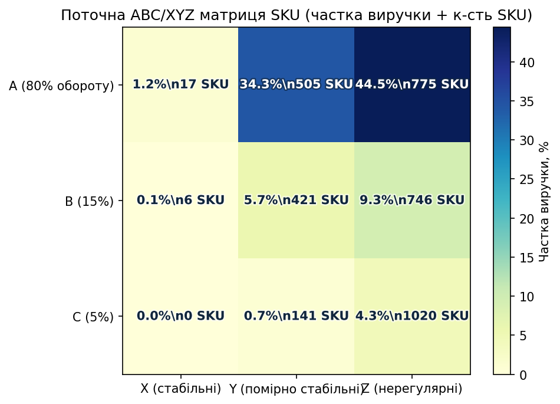
Що показує графік: у кожній комірці одночасно видно частку виручки та кількість SKU.
Ключовий висновок: найбільша частка виручки зараз у AZ (44.48%) та AY (34.33%), тоді як стабільне ядро AX дає лише 1.17%. Це означає залежність від високого, але нерівномірного попиту.
| Комірка | К-сть SKU | Виручка | К-сть продажів (од.) | Сер. активних місяців | Сер. CV попиту | Частка виручки, % |
|---|---|---|---|---|---|---|
| AX | 17 | 12 409 грн | 415.00 | 8.18 | 1.02 | 1.17% |
| AY | 505 | 364 173 грн | 3 424.00 | 3.09 | 2.03 | 34.33% |
| AZ | 775 | 471 740 грн | 1 501.00 | 1.07 | 3.41 | 44.48% |
| BX | 6 | 824 грн | 120.00 | 7.67 | 1.11 | 0.08% |
| BY | 421 | 60 227 грн | 1 974.00 | 2.48 | 2.20 | 5.68% |
| BZ | 746 | 98 223 грн | 1 377.00 | 1.05 | 3.43 | 9.26% |
| CX | 0 | 0 грн | 0.00 | 0.00 | 0.00 | 0.00% |
| CY | 141 | 7 682 грн | 772.00 | 2.41 | 2.24 | 0.72% |
| CZ | 1 020 | 45 379 грн | 1 568.20 | 1.02 | 3.45 | 4.28% |
| SKU | Комірка ABC/XYZ | Виручка | К-сть, од. | Місяців з продажами | CV попиту |
|---|---|---|---|---|---|
| Катушка Salmo ELITE FREERUN 7+1 7650BR (8450BR) | AY | 9 408 грн | 8.00 | 2 | 2.43 |
| Лодка Барк B-250D | AZ | 9 300 грн | 1.00 | 1 | 3.46 |
| Яйца 2016 | AY | 8 172 грн | 188.00 | 8 | 1.44 |
| Лодка Барк B-240CD | AZ | 8 100 грн | 1.00 | 1 | 3.46 |
| Ледобур Тонар (Барнаул) ЛР-130Д | AY | 8 000 грн | 2.00 | 2 | 2.35 |
| Ледобур iDabur твин 130 мм | AY | 6 000 грн | 3.00 | 2 | 2.49 |
| Катушка Ryobi Ecusima GC1000 | AY | 5 997 грн | 3.00 | 2 | 2.49 |
| Спиннинг St.Croix Premier Spinning Rod 213 см 7-17.5 гр Fast PS70MF3 | AZ | 5 604 грн | 1.00 | 1 | 3.46 |
| Катушка Kalipso Monza 4000FE | AY | 5 341 грн | 6.00 | 5 | 1.37 |
| Спиннинг Kalipso Titan Carp 3.90м 4.0lb | AY | 5 256 грн | 4.00 | 2 | 2.35 |
| Котушка Ryobi Ecusima Pro LT2000 NEW2023 | AY | 4 680 грн | 2.00 | 2 | 2.35 |
| Катушка Daiwa EMCAST EVO 5500 Airbail | AZ | 4 613 грн | 1.00 | 1 | 3.46 |
| Катушка Kalipso Monza 5000FE | AY | 4 601 грн | 5.00 | 4 | 1.62 |
| Підсак квадрат (сітка корда) (ручка 1,9м; голова 560х750; комірка 40х40) | AY | 4 297 грн | 5.00 | 3 | 1.92 |
| Жилет Golden Catch спиннингиста серый | AY | 4 132 грн | 2.00 | 2 | 2.35 |
| Удилище Salmo TAIFUN FEEDER 360, 3134-365 (120г) | AZ | 4 066 грн | 6.00 | 2 | 2.90 |
| Кресло CZ Recliner Comfort Armchair 56x46x42 98 с подлокотниками и рег. ножками | AZ | 3 956 грн | 1.00 | 1 | 3.46 |
| Мормышка ручн.работа крючок Origin | AY | 3 801 грн | 108.00 | 7 | 1.74 |
| Спиннинг GC Inquisitor INS-862ML 2.59м 5-21гр | AZ | 3 791 грн | 1.00 | 1 | 3.46 |
| Спиннинг Kalipso Titan Carp 3.60м 4.0lb | AZ | 3 780 грн | 3.00 | 1 | 3.46 |
| Котушка Ryobi Excia-Pro 2000S | AZ | 3 651 грн | 1.00 | 1 | 3.46 |
| Спиннинг Kalipso Navigator Carbon 2.70m 40-130гр | AZ | 3 586 грн | 3.00 | 1 | 3.46 |
| Котушка Ryobi Excia Pro 2000 | AZ | 3 550 грн | 1.00 | 1 | 3.46 |
| Спиннинг Favorite Synapse Twitching SYST602UL 1.82m 2-8g Moderate | AZ | 3 485 грн | 1.00 | 1 | 3.46 |
| Спиннинг Kalipso Titan Carp 3.60м 3.5lb | AY | 3 450 грн | 3.00 | 2 | 2.49 |
| Комірка | Тип SKU | Управлінська політика |
|---|---|---|
| AX | Ключові та стабільні | Максимальна наявність, жорсткий контроль out-of-stock, пріоритет закупівлі. |
| AY | Ключові, але хвилясті | Сезонний план + страховий запас, закупівля під піки, контроль акцій. |
| AZ | Ключові, але нерегулярні | Точковий закуп під подію/замовлення, мінімізувати зависання грошей у складі. |
| BX | Середній оборот, стабільні | Підтримувати в асортименті, автоматичне поповнення невеликими партіями. |
| BY | Середній оборот, нестабільні | Тримати обмежений запас, поповнювати за фактом продажів. |
| BZ | Середній оборот, нерегулярні | Закуп лише за підтвердженим попитом, скорочувати SKU-дублери. |
| CX | Низький оборот, стабільні | Перевірка маржі; залишати лише рентабельні позиції. |
| CY | Низький оборот, нестабільні | Кандидати на ротацію/заміну, обмежити вкладення в запас. |
| CZ | Низький оборот, нерегулярні | Перші кандидати на виведення або продаж під замовлення. |
| Категорія | Виручка | Частка у загальній виручці | Продано одиниць | Кількість чеків/документів | Кількість товарних позицій |
|---|---|---|---|---|---|
| Воблер | 1 616 642 грн | 22.84% | 6 827 | 2 819 | 3 266 |
| Спиннинг | 479 972 грн | 6.78% | 542 | 440 | 155 |
| Катушка | 381 307 грн | 5.39% | 788 | 573 | 128 |
| Блесна | 292 454 грн | 4.13% | 3 515 | 1 379 | 862 |
| Шнур | 239 714 грн | 3.39% | 2 774 | 765 | 147 |
| Леска | 154 991 грн | 2.19% | 1 731 | 1 292 | 219 |
| Крючки | 141 670 грн | 2.00% | 2 840 | 1 562 | 315 |
| Котушка | 133 549 грн | 1.89% | 153 | 124 | 36 |
| Поплавок | 132 890 грн | 1.88% | 2 781 | 1 095 | 352 |
| Силикон | 124 919 грн | 1.76% | 3 549 | 1 125 | 855 |
| Удилище | 119 302 грн | 1.69% | 151 | 117 | 56 |
| Термобелье | 98 798 грн | 1.40% | 105 | 13 | 15 |
| Виброхвост | 98 435 грн | 1.39% | 1 647 | 776 | 318 |
| Груз | 97 960 грн | 1.38% | 9 492 | 1 658 | 380 |
| Крючок | 95 035 грн | 1.34% | 10 067 | 970 | 189 |
| Удочка | 94 400 грн | 1.33% | 287 | 223 | 52 |
| Сапоги | 81 820 грн | 1.16% | 79 | 77 | 31 |
| Лодка | 81 192 грн | 1.15% | 10 | 10 | 10 |
| Яйца | 70 675 грн | 1.00% | 1 854 | 386 | 3 |
| Мягкая | 70 412 грн | 0.99% | 934 | 519 | 210 |
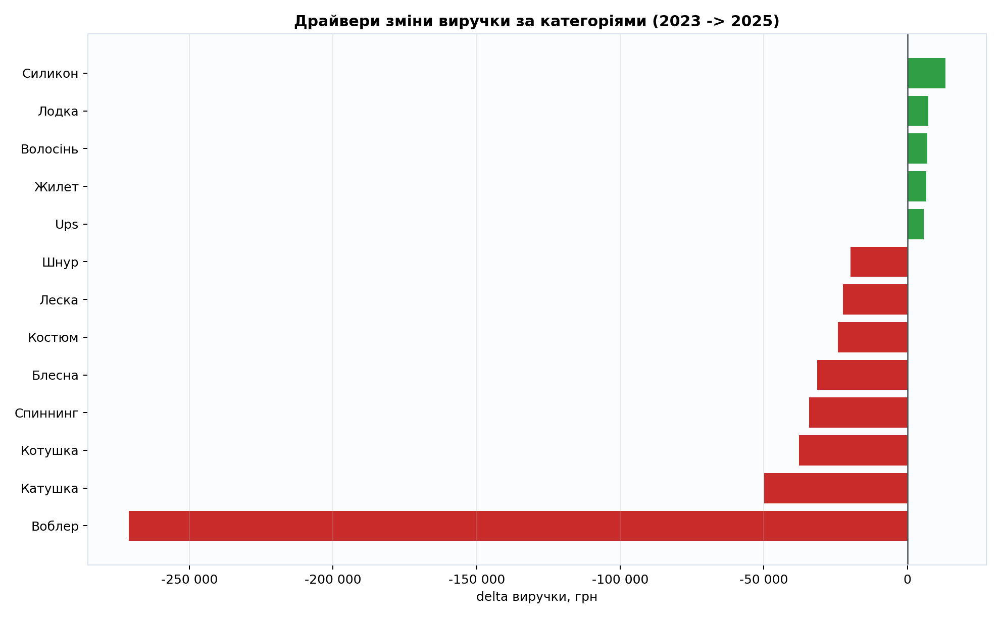
Що показує графік: які категорії дали найбільше падіння або приріст виручки.
Короткий висновок: спад концентрується в обмеженому колі категорій; саме там потрібні першочергові дії.
| Категорія | Виручка 2023 | Виручка 2025 | Зміна виручки | Кількість 2023 | Кількість 2025 | Зміна кількості |
|---|---|---|---|---|---|---|
| Воблер | 454 856 грн | 183 707 грн | -271 149 грн | 1 753 | 647 | -1 106 |
| Катушка | 114 140 грн | 64 301 грн | -49 839 грн | 193 | 101 | -92 |
| Котушка | 53 933 грн | 16 141 грн | -37 792 грн | 57 | 12 | -45 |
| Спиннинг | 132 873 грн | 98 689 грн | -34 184 грн | 118 | 91 | -27 |
| Блесна | 70 817 грн | 39 470 грн | -31 347 грн | 811 | 379 | -432 |
| Костюм | 24 221 грн | 0 грн | -24 221 грн | 3 | 0 | -3 |
| Леска | 42 370 грн | 19 924 грн | -22 446 грн | 381 | 178 | -203 |
| Шнур | 57 847 грн | 38 092 грн | -19 755 грн | 743 | 397 | -346 |
| Зимний | 18 122 грн | 0 грн | -18 122 грн | 2 | 0 | -2 |
| Поплавок | 32 407 грн | 15 734 грн | -16 673 грн | 559 | 334 | -225 |
| Удилище | 37 761 грн | 21 666 грн | -16 094 грн | 42 | 27 | -15 |
| Удочка | 27 326 грн | 12 097 грн | -15 229 грн | 59 | 34 | -25 |
| Категорія | Виручка 2023 | Виручка 2025 | Зміна виручки | Кількість 2023 | Кількість 2025 | Зміна кількості |
|---|---|---|---|---|---|---|
| Силикон | 21 390 грн | 34 678 грн | 13 288 грн | 703 | 626 | -77 |
| Лодка | 10 200 грн | 17 400 грн | 7 200 грн | 1 | 2 | 1 |
| Волосінь | 0 грн | 6 868 грн | 6 868 грн | 0 | 52 | 52 |
| Жилет | 2 020 грн | 8 643 грн | 6 623 грн | 3 | 6 | 3 |
| Ups | 0 грн | 5 730 грн | 5 730 грн | 0 | 43 | 43 |
| Комбинезон | 0 грн | 5 688 грн | 5 688 грн | 0 | 2 | 2 |
| Преміум | 0 грн | 4 540 грн | 4 540 грн | 0 | 21 | 21 |
| Бойли | 763 грн | 5 102 грн | 4 339 грн | 7 | 40 | 33 |
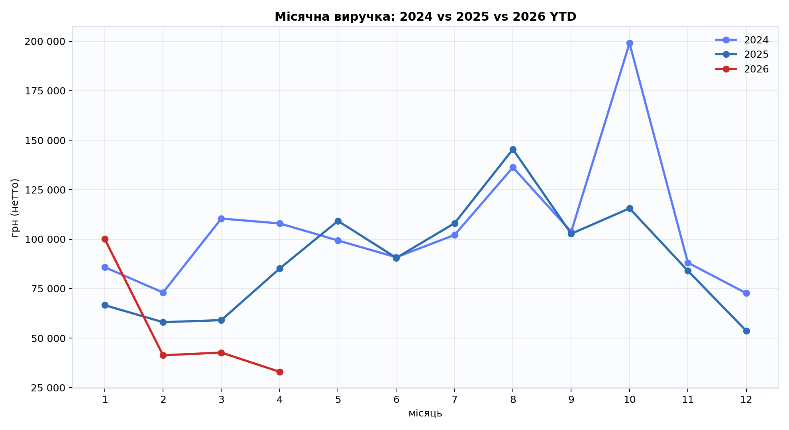
Що показує графік: як 2026 рік іде по місяцях відносно попередніх років.
Короткий висновок: поточний темп 2026 поки не показує відновлення до рівня 2025.
| Місяць | Середня виручка за місяць | Середня кількість проданих одиниць | Середня кількість чеків/документів | Індекс сезонності виручки (1.00 = середній рівень) |
|---|---|---|---|---|
| 1 | 130.79 грн | 1.97 | 1 000 | 1.06 |
| 2 | 124.55 грн | 1.85 | 968 | 1.01 |
| 3 | 129.17 грн | 1.84 | 1 102 | 1.04 |
| 4 | 113.54 грн | 1.66 | 1 317 | 0.92 |
| 5 | 107.59 грн | 1.56 | 1 444 | 0.87 |
| 6 | 110.78 грн | 1.60 | 1 490 | 0.90 |
| 7 | 110.09 грн | 1.56 | 1 547 | 0.89 |
| 8 | 113.75 грн | 1.55 | 1 628 | 0.92 |
| 9 | 131.74 грн | 1.64 | 1 761 | 1.06 |
| 10 | 127.93 грн | 1.82 | 1 907 | 1.03 |
| 11 | 137.29 грн | 2.09 | 1 341 | 1.11 |
| 12 | 147.90 грн | 1.99 | 874 | 1.20 |
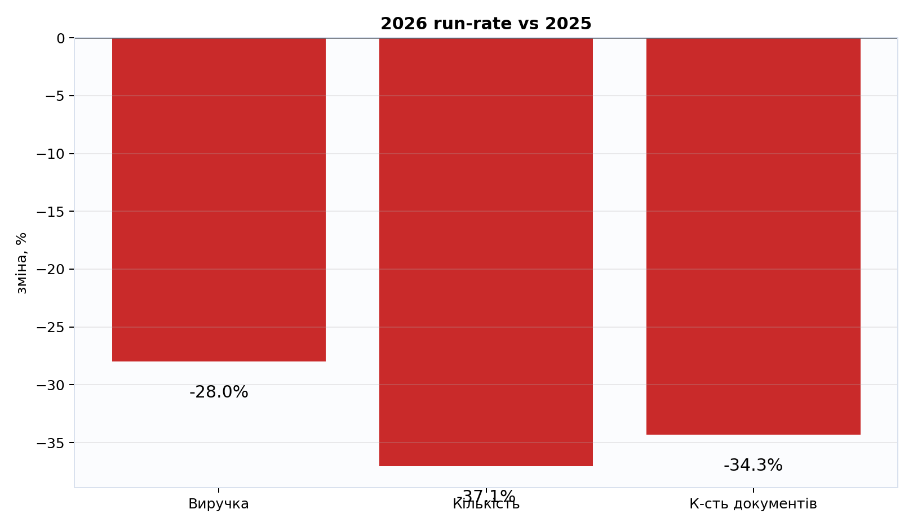
Що показує графік: прогноз річного результату 2026 на основі фактичних даних поточного періоду.
Короткий висновок: прогноз нижчий за 2025 рік, отже без швидких дій ризик завершити рік зі спадом залишається високим.
| Початок періоду | Кінець періоду | Кількість днів | Прогноз річної виручки | Прогноз річної кількості | Прогноз річної кількості чеків/документів | Відхилення до 2025 за виручкою | Відхилення до 2025 за кількістю | Відхилення до 2025 за чеками |
|---|---|---|---|---|---|---|---|---|
| 2026-01-02 | 2026-04-13 | 102 | 776 397 грн | 7 382 | 1 575 | -28.0% | -37.1% | -34.3% |